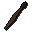
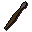
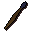
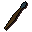
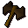
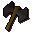
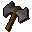
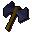
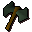
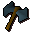

Authentic throwing weapons.
Inventory config
ranging_guild_tribalshopRun by  Tribal Weapon Salesman. Open in knowledge graph →
Tribal Weapon Salesman. Open in knowledge graph →
Located in: Hemenster
Stock
| Item | Stock | Value | Sells for |
|---|---|---|---|
 Bronze javelin | 900 | 4 gp | 5 gp |
| 800 | 6 gp | 7 gp | |
 Steel javelin | 700 | 24 gp | 31 gp |
 Mithril javelin | 600 | 64 gp | 83 gp |
| 500 | 160 gp | 208 gp | |
 Rune javelin | 400 | 400 gp | 520 gp |
 Bronze thrownaxe | 900 | 3 gp | 3 gp |
 Iron thrownaxe | 800 | 7 gp | 9 gp |
 Steel thrownaxe | 700 | 26 gp | 33 gp |
 Mithril thrownaxe | 600 | 70 gp | 91 gp |
 Adamnt thrownaxe | 500 | 176 gp | 228 gp |
 Rune thrownaxe | 400 | 440 gp | 572 gp |
Shop sells at 130.0% of item value and buys at 50.0%.